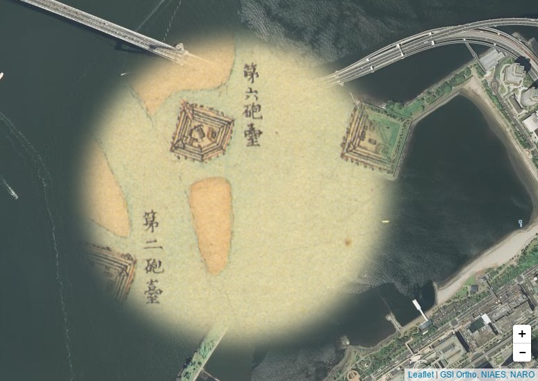

Leaflet-tilelayer-mask adds mask effect to tilelayer.
L.tileLayer.mask('http://www.finds.jp/ws/tmc/1.0.0/Kanto_Rapid-900913-L/{z}/{x}/{y}.png', {
attribution : 'NIAES, NARO',
maskUrl : 'star.png',
maskWidth : 800,
maskHeight : 800
}).addTo(map);
View the Project on GitHub frogcat/leaflet-tilelayer-mask
MIT License. See LICENSE for more details.